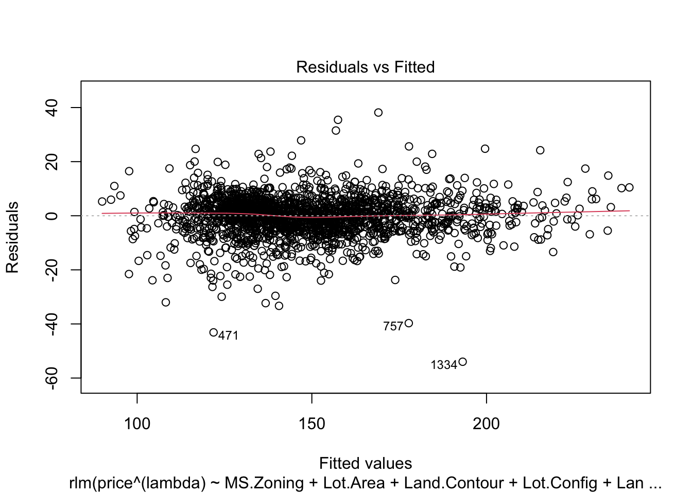

EXT CSCI E-106 Model Data Class Special Project Template
Authors
Nilay Sundarkar
Christopher Craddock
Seraphim Eilken
Simon Carandang
Published
May 5, 2024
Data
Refer to the Housing prices in Ames, Iowa
2930 observations, 82 variables
#Step 0: Data Preparations#install.packages("visdat")library(readr)library(visdat)library(tidyr)library(MASS)# Checking for NA, or missing data using graphics ames_data <-read_csv("ames.csv")
Rows: 2930 Columns: 82
── Column specification ────────────────────────────────────────────────────────
Delimiter: ","
chr (43): MS.Zoning, Street, Alley, Lot.Shape, Land.Contour, Utilities, Lot....
dbl (39): Order, PID, area, price, MS.SubClass, Lot.Frontage, Lot.Area, Over...
ℹ Use `spec()` to retrieve the full column specification for this data.
ℹ Specify the column types or set `show_col_types = FALSE` to quiet this message.
Data set contains information from the Ames Assessor’s Office used in computing assessed values for individual residential properties sold in Ames, IA from 2006 to 2010. See here for detailed variable descriptions.
Objective
Using the data build a prediction model using explanatory variables or predictors to allow a typical buyer or real estate agent to sit down and estimate the selling price of a house “SalePrice” (It is a continuous variable) is the response variable.
Due Date: May 6, 2024 at 11:59 pm EST
Instructions:
1
Join a team with your fellow students with appropriate size (at most four students total). You may post an advertising in ED. Once you are set, send to rafael_gomeztagle@g.harvard.edu the name of the team members and their emails.
2
Review the dataset named “ames’csv, report on preliminary findings (missing data, type of variables, distributions).
3
Create the train data set which contains 70% of the data and use set.seed (1023). The remaining 30% will be your test data set.
4
Investigate the data and combine the level of categorical variables if needed and drop variables as needed. For example, you may drop id, variables with too many missing observations, etc.
5
Create scatter plots and a correlation matrix for the train data set. Interpret the possible relationship between the response and the covariates.
6
Build several multiple linear models by using the stepwise selection methods. Compare the performance of the best two linear models.
7
Make sure that model assumption(s) are checked for the final model. Apply remedy measures (transformation, etc.) that helps satisfy the linear model assumptions.
8
Investigate unequal variances and multicollinearity. If necessary, apply remedial methods (WLS, Ridge, Elastic Net, Lasso, etc.).
9
Build an alternative model based on one of the following approaches to predict price: regression tree, NN, or SVM. Then check again the applicable model assumptions.
10
Use the test data set to assess the model performances from above.
11
Based on the performances on both train and test data sets, determine your primary (champion) model and the other model which would be your benchmark model.
12
Create a model development document that describes the model following this template, input the name of the authors, Harvard IDs, the name of the Group, all of your code and calculations, etc.: be sure you populate all the sections of this template.
13
Each student must submit the files on Canvas to get the full credit.
Notes:No typographical errors, grammar mistakes, or misspelled words, use English languageAll tables need to be numbered and describe their content in the body of the documentAll figures/graphs need to be numbered and describe their contentAll results must be accurate and clearly explained for a casual reviewer to fully understand their purpose and impactSubmit both the RMD markdown file and PDF with the sections with appropriate explanations. A more formal document in Word can be used in place of the pdf file but must include all appropriate explanations.
Send email details - done by Simon
Review the dataset named “ames’csv, report on preliminary findings (missing data, type of variables, distributions).
Data set contains information from the Ames Assessor’s Office used in computing assessed values for individual residential properties sold in Ames, IA from 2006 to 2010.
The data has 82 columns which include 23 nominal, 23 ordinal, 14 discrete, and 20 continuous variables (and 2 additional observation identifiers).
Create the train data set which contains 70% of the data and use set.seed (1023). The remaining 30% will be your test data set.
Investigate the data and combine the level of categorical variables if needed and drop variables as needed. For example, you may drop id, variables with too many missing observations, etc.
Dropping Order, PID as they are just an identifier for the observations.
Dropping “Pool.QC”, “Misc.Feature”, “Alley”,“Fence”, “Fireplace.Qu”, “Lot.Frontage”,“Garage.Yr.Blt”, “Garage.Finish”, “Garage.Qual”,“Garage.Cond”, “Garage.Type” as they have high number of missing values.
Cleaning NA rows for the rest of the data.
ames_data.df <-data.frame(ames_data)# Domain analysis to clean up data# We rely on descriptions/comments provided at https://jse.amstat.org/v19n3/decock/DataDocumentation.txt, statistical tests and our own intuition to determine if there are any columns that need to be removed# The document mentions below for outliers - #SPECIAL NOTES:#There are 5 observations that an instructor may wish to remove from the data set before giving it to students (a plot of SALE PRICE versus GR LIV AREA will indicate them #quickly). Three of them are true outliers (Partial Sales that likely don’t represent actual market values) and two of them are simply unusual sales (very large houses priced #relatively appropriately). I would recommend removing any houses with more than 4000 square feet from the data set (which eliminates these 5 unusual observations) before #assigning it to students.ames.known_outliers <- ames_data.df[ames_data.df$area >4000,]ames_data.df <- ames_data.df[!(ames_data.df$PID %in% ames.known_outliers$PID),]ames.train_data.df <-data.frame(ames.train_data)ames.train_data.df <- ames.train_data.df[!(ames.train_data.df$PID %in% ames.known_outliers$PID),]ames.test_data.df <-data.frame(ames.test_data)ames.test_data.df <- ames.test_data.df[!(ames.test_data.df$PID %in% ames.known_outliers$PID),]# check which columns have NA values and how many per columnna_count <-sapply(ames_data.df, function(y) sum(length(which(is.na(y)))))na_count <-data.frame(na_count)na_count$name<-rownames(na_count)na_count <- na_count[na_count$na_count>0,]na_count <-data.frame(na_count)na_count <- na_count[order(na_count$na_count, decreasing =TRUE), ]na_count
# drop columns that have very high number of NA values and those that are not related to the response variable (order and PID)# Misc.Feature is directly associated with Misc.Val - so dropping Misc.Valdrops <-c("Pool.QC", "Misc.Feature", "Alley","Fence", "Fireplace.Qu", "Order", "PID", "Misc.Val")ames_data.df <- ames_data.df[ , !(names(ames_data.df) %in% drops)]
#for the rest of columns that have somewhat high NA values, we remove the NA rows and check the correlation between that column and the response variable`%notin%`<-Negate(`%in%`)na_count <- na_count[na_count$name %notin% drops,]na_count
# Lot.Frontage has 490 NA valuesLot.Frontage_df <-data.frame(ames_data$price,ames_data$Lot.Frontage)Lot.Frontage_df <-drop_na(Lot.Frontage_df)# low correlation between Lot.Frontage and SalePricecor(Lot.Frontage_df$ames_data.price,Lot.Frontage_df$ames_data.Lot.Frontage)
[1] 0.3573179
# Garage.Yr.Blt, Garage.Finish , Garage.Qual, Garage.Cond and Garage.Type are all related to Garage and seem to have NA values for the same rowsGarage_df <-data.frame(ames_data$price, ames_data$Garage.Yr.Blt, ames_data$Garage.Finish, ames_data$Garage.Qual, ames_data$Garage.Cond, ames_data$Garage.Type)Garage_df <-drop_na(Garage_df)# no significant correlation is observed with the response variableplot(Garage_df)
# the remaining columns that have any NA rows are low in number, so we will clean the data for those rowsames_data.df <-drop_na(ames_data.df)ames.train_data.df <-drop_na(ames.train_data.df)ames.test_data.df <-drop_na(ames.test_data.df)
# check for significance of categorical variables remainingcategoricalVarsColumnNames <-c("MS.SubClass", "MS.Zoning", "Street", "Lot.Shape", "Land.Contour", "Utilities", "Lot.Config", "Land.Slope", "Neighborhood", "Condition.1", "Condition.2", "Bldg.Type", "House.Style", "Overall.Qual", "Overall.Cond", "Year.Built", "Year.Remod.Add", "Roof.Style", "Roof.Matl", "Exterior.1st", "Exterior.2nd", "Mas.Vnr.Type", "Exter.Qual", "Exter.Cond", "Foundation", "Bsmt.Qual", "Bsmt.Cond", "Bsmt.Exposure", "BsmtFin.Type.1", "BsmtFin.Type.2", "Heating", "Heating.QC", "Central.Air", "Electrical","Bsmt.Full.Bath", "Bsmt.Half.Bath", "Full.Bath", "Half.Bath", "Bedroom.AbvGr", "Kitchen.AbvGr", "Kitchen.Qual", "TotRms.AbvGrd","Functional", "Fireplaces", "Garage.Cars", "Paved.Drive", "Mo.Sold" , "Yr.Sold", "Sale.Type", "Sale.Condition")# generic function to test chi square test for a categorical variable# here we calculate anova for a model with the categorical variable and another model without itmodelWithAllColumns <-glm(price~., data = ames.train_data.df)chiTest <-function(columnName) {options(scipen =999) ames.train_data.withoutColumnPassed <- ames.train_data.df[ , !(names(ames.train_data.df) %in%c(columnName))] modelWithoutColumnPassed <-glm(price~.,data = ames.train_data.withoutColumnPassed) aqq <-anova(modelWithAllColumns,modelWithoutColumnPassed,test="Chisq")return (aqq$`Pr(>Chi)`[2])}# data frame to hold results for each categorical variablechiTestResults <-data.frame(matrix(ncol =2, nrow =0))x <-c("Column Name", "ChiValue")colnames(chiTestResults) <- x# pass each categorical variable in the functionfor (i in categoricalVarsColumnNames){ chiResult <-chiTest(i) chiTestResults[nrow(chiTestResults) +1,] =c(i,chiResult)}chiTestResults
# Now looking at the insignificant categorical columns to see if we want to keep any that seem to be relevant or those that have a score close to 0.05# retaining Year.Remod.Add, Roof.Style, Full.Bath, Kitchen.AbvGr, Yr.Sold, Sale.ConditioninsignificantCategoricalColumns <- insignificantCategoricalColumns[insignificantCategoricalColumns$`Column Name`%notin%c("Year.Remod.Add", "Roof.Style", "Full.Bath", "Kitchen.AbvGr", "Yr.Sold", "Sale.Condition"),]insignificantCategoricalColumns
The following object is masked from 'package:tidyr':
smiths
temp.df <- ames.train_data.dffor(name in categoricalVarsColumnNames.df){ temp.df[,name] <-as.numeric(temp.df[,name]) }totalColumns <-ncol(temp.df)step_size <-10startIndex <-1endIndex <- step_size# function that will be called multiple times to print correlation matricesprintCorrelationMatrix <-function(start,end) { temp1.df <-data.frame(temp.df[start:end]) tempColumnNames <-colnames(temp1.df)if("price"%notin% tempColumnNames){ temp1.df$price <- temp.df$price } Correlations<-round(cor(temp1.df),2) melted_cormat <-melt(Correlations)print(ggplot(data = melted_cormat, aes(x = Var1, y = Var2, fill = value)) +geom_tile() +geom_text(aes(Var2, Var1, label = value), size =2) +scale_fill_gradient2(low ="blue", high ="red", limit =c(-1, 1), name ="Correlation") +theme(axis.title.x =element_text(), axis.title.y =element_blank(), axis.text.x =element_text(angle =90, vjust =0.5, hjust=1), panel.background =element_blank()))}# end functionwhile(endIndex <= totalColumns){printCorrelationMatrix(startIndex,endIndex) startIndex <- startIndex + step_size endIndex <- endIndex + step_sizeif(endIndex > totalColumns & startIndex < totalColumns){printCorrelationMatrix(startIndex,totalColumns) }}
Build several multiple linear models by using the stepwise selection methods. Compare the performance of the best two linear models.
# Model Fitting# Build full model with all predictorsfm <-lm(price ~., data = ames.train_data.df)# Build null model with no predictorsnm <-lm(price ~1, data = ames.train_data.df)# Stepwise selection using both AIC and BICsm_both_aic <-step(fm, direction ="both", scope =list(lower = nm, upper = fm), trace =FALSE, k =2)sm_both_bic <-step(fm, direction ="both", scope =list(lower = nm, upper = fm), trace =FALSE, k =log(nrow(ames.train_data.df)))library(olsrr)
Attaching package: 'olsrr'
The following object is masked from 'package:MASS':
cement
The following object is masked from 'package:datasets':
rivers
# Stepwise selection using p-value significance levelsm_both_p <-ols_step_both_p(fm, p_enter =0.05, p_remove =0.05, details =FALSE)# Display Summary of Stepwise models# Summary of the model using both AICcat("Summary of Stepwise Model (Both Directions - AIC):\n")
Summary of Stepwise Model (Both Directions - AIC):
Make sure that model assumption(s) are checked for the final model. Apply remedy measures (transformation, etc.) that helps satisfy the linear model assumptions.
#Constancy of the Error Variance#Residuals vs Fitted and breusch pagan test show that Error Variance is #not constantplot(sm_both_aic, which =1)
library(olsrr)ols_test_breusch_pagan(sm_both_aic)
Breusch Pagan Test for Heteroskedasticity
-----------------------------------------
Ho: the variance is constant
Ha: the variance is not constant
Data
---------------------------------
Response : price
Variables: fitted values of price
Test Summary
------------------------------------------------------------------------------------------------------------------------------------
DF = 1
Chi2 = 474.7071
Prob > Chi2 = 0.000000000000000000000000000000000000000000000000000000000000000000000000000000000000000000000000000000003030233
#QQ Plot for Normality#Normality plot and Shapiro test show that residuals #do not fulfill normality assumptionplot(sm_both_aic, which =2)
Warning: not plotting observations with leverage one:
462, 524, 891, 1645
#Shapiro Testshapiro.test(sm_both_aic$residuals)
Shapiro-Wilk normality test
data: sm_both_aic$residuals
W = 0.94814, p-value < 0.00000000000000022
#Presence of outliers. #Boxplot of residuals for potential outliersboxplot(sm_both_aic$residuals,horizontal=TRUE,staplewex=0.5,col=3,xlab="Residuals")
#Cooks distance plotplot(sm_both_aic,which=4)
#Leverage vs standardized residualsplot(sm_both_aic, which =5)
Warning: not plotting observations with leverage one:
462, 524, 891, 1645
Breusch Pagan Test for Heteroskedasticity
-----------------------------------------
Ho: the variance is constant
Ha: the variance is not constant
Data
------------------------------------------
Response : price^(lambda)
Variables: fitted values of price^(lambda)
Test Summary
------------------------------
DF = 1
Chi2 = 0.002167362
Prob > Chi2 = 0.9628679
#QQ Plot for Normality#Normality plot and Shapiro test show that residuals #do not fulfill normality assumptionplot(transformed_model, which =2)
Warning: not plotting observations with leverage one:
462, 524, 891, 1645
Shapiro-Wilk normality test
data: transformed_model$residuals
W = 0.96628, p-value < 0.00000000000000022
# copy transformed model and data to temp var - this will be changed recursivelytemp_model <- transformed_modeltemp_data <- ames.train_data.df# function to get transformed model from filtered datasetgetRevisedModel <-function(filteredData) { revisedModel <-lm(price^(lambda) ~ MS.Zoning + Lot.Area + Land.Contour + Lot.Config + Land.Slope + Neighborhood + Condition.1+ Bldg.Type + Overall.Qual + Overall.Cond + Year.Built + Year.Remod.Add + Roof.Matl + Mas.Vnr.Type + Mas.Vnr.Area + Exter.Qual + Bsmt.Qual + Bsmt.Exposure + BsmtFin.SF.1+ BsmtFin.Type.2+ BsmtFin.SF.2+ Bsmt.Unf.SF + Central.Air + X1st.Flr.SF + X2nd.Flr.SF + Full.Bath + Half.Bath + Bedroom.AbvGr + Kitchen.AbvGr + Kitchen.Qual + Functional + Fireplaces + Garage.Area + Wood.Deck.SF + Screen.Porch + Sale.Condition, data = filteredData)return (revisedModel)}# function to recursively remove influential outliersremoveInfluentials <-function(model,temp_data){print(paste("Number of Observations ", nrow(temp_data), sep="")) a <-ols_plot_resid_lev(model) influentials <- a$data[a$data$fct_color=="outlier & leverage",] influentials <-drop_na(influentials) numInfluentials <-nrow(influentials)print(paste("Number of influentials -", numInfluentials,sep =" "))if(numInfluentials >0){ temp_data <- temp_data[ -c(influentials$obs), ] temp_model <-getRevisedModel(temp_data)removeInfluentials(temp_model,temp_data) }else{return (temp_data) }}# use train data without influentialsames.train_data.df <- temp_datatransformed_model <-getRevisedModel(ames.train_data.df)### The below is just an exercise to see how the plots look like when we get rid of all outliers# although the model fits well after outlier removal, removing about 400 observations seemed like a case of overfitting# the function below is not changing any data or model that is used in teh subsequent sections# function to recursively remove outliersremoveOutliers <-function(model,temp_data){print(paste("Number of Observations ", nrow(temp_data), sep="")) a <-ols_plot_cooksd_bar(model) outliers <- a$data[a$data$fct_color=="outlier",] outliers <-drop_na(outliers) numOutliers <-nrow(outliers)print(paste("Number of outliers -", numOutliers,sep =" "))if(numOutliers >0){ temp_data <- temp_data[ -c(outliers$obs), ] temp_model <-getRevisedModel(temp_data)removeOutliers(temp_model,temp_data) }else{return (temp_data) }}print(paste("Number of rows before removing influentials -",nrow(temp_data)))
[1] "Number of rows before removing influentials - 1967"
[1] "Number of influentials - 18"
[1] "Number of Observations 1949"
[1] "Number of influentials - 5"
[1] "Number of Observations 1944"
[1] "Number of influentials - 2"
[1] "Number of Observations 1942"
[1] "Number of influentials - 2"
[1] "Number of Observations 1940"
[1] "Number of influentials - 1"
[1] "Number of Observations 1939"
[1] "Number of influentials - 2"
[1] "Number of Observations 1937"
[1] "Number of influentials - 0"
print(paste("Number of rows after removing influentials -",nrow(temp_data)))
[1] "Number of rows after removing influentials - 1937"
temp_model <-getRevisedModel(temp_data)# this should show no influential obsols_plot_resid_lev(temp_model)
# checking tailsplot(temp_model, which =2)
Warning: not plotting observations with leverage one:
459, 521, 880, 1617
#temp_data <- removeOutliers(temp_model,temp_data)#print(paste("Number of rows after removing outliers -",nrow(temp_data)))#temp_model <- getRevisedModel(temp_data)# this should show no outlier obs#ols_plot_cooksd_bar(temp_model)# checking tails#plot(temp_model, which = 2)
#Constancy of the Error Variance#Residuals vs Fitted and breusch pagan test show that Error Variance is #not constantplot(huber_lm, which=1)

library(olsrr)ols_test_breusch_pagan(huber_lm)
Breusch Pagan Test for Heteroskedasticity
-----------------------------------------
Ho: the variance is constant
Ha: the variance is not constant
Data
------------------------------------------
Response : price^(lambda)
Variables: fitted values of price^(lambda)
Test Summary
----------------------------
DF = 1
Chi2 = 0.1050719
Prob > Chi2 = 0.745826
#QQ Plot for Normality#Normality plot and Shapiro test show that residuals #do not fulfill normality assumptionplot(huber_lm, which =2)
Warning: not plotting observations with leverage one:
462, 524, 891, 1645
#Shapiro Testshapiro.test(huber_lm$residuals)
Shapiro-Wilk normality test
data: huber_lm$residuals
W = 0.94521, p-value < 0.00000000000000022
Investigate unequal variances and multicollinearity. If necessary, apply remedial methods (WLS, Ridge, Elastic Net, Lasso, etc.).
These are on the high end of VIFs. None are greater than 10. remedial methods are not necessary. BsmtFin.SF.1: 7.887440 Bsmt.Unf.SF: 7.267218 Bldg.Type: 7.749723 X1st.Flr.SF: 6.223949 Exter.Qual: 6.279509
#According to VIF there seems to be multicollinearity issues#since there are many VIFs greater than 10.library(car)
Build an alternative model based on one of the following approaches to predict price: regression tree, NN, or SVM. Then check again the applicable model assumptions.
RMSE Rsquared MAE
33498.6894389 0.7972518 24653.4045984
Based on the performances on both train and test data sets, determine your primary (champion) model and the other model which would be your benchmark model.
Transformed Model result using test set
# Summary for transformed linear model using train setPredictedTest1 <-predict(transformed_model,ames.train_data.df)ModelTest1 <-data.frame(obs = ames.train_data.df$price, pred=PredictedTest1)defaultSummary(ModelTest1)
RMSE Rsquared MAE
200170.0996838 0.9012827 183527.3078814
# Build full model with all predictorsfm <-lm(price^(lambda) ~ MS.Zoning + Lot.Area + Land.Contour + Lot.Config + Land.Slope + Neighborhood + Condition.1+ Bldg.Type + Overall.Qual + Overall.Cond + Year.Built + Year.Remod.Add + Roof.Matl + Mas.Vnr.Type + Mas.Vnr.Area + Exter.Qual + Bsmt.Qual + Bsmt.Exposure + BsmtFin.SF.1+ BsmtFin.Type.2+ BsmtFin.SF.2+ Bsmt.Unf.SF + Central.Air + X1st.Flr.SF + X2nd.Flr.SF + Full.Bath + Half.Bath + Bedroom.AbvGr + Kitchen.AbvGr + Kitchen.Qual + Functional + Fireplaces + Garage.Area + Wood.Deck.SF + Screen.Porch + Sale.Condition, data = ames.test_data.df)# Build null model with no predictorsnm <-lm(price^(lambda) ~1, data = ames.test_data.df)# Stepwise selection using both AIC and BICsm_both_aic <-step(fm, direction ="both", scope =list(lower = nm, upper = fm), trace =FALSE, k =2)PredictedTest1.2<-predict(sm_both_aic,ames.test_data.df)ModelTest1.2<-data.frame(obs = ames.test_data.df$price, pred=PredictedTest1.2)defaultSummary(ModelTest1.2)
RMSE Rsquared MAE
192908.4779778 0.8805362 177994.6637578
Summary of model performances
out <-rbind(defaultSummary(ModelTest1),defaultSummary(ModelTest1.2),defaultSummary(ModelTest2),defaultSummary(ModelTest2.2))dimnames(out)[[1]] <-c("Best Linear (Train)","Best Linear (Test)","Best Regression Tree (Train)","Best Regression Tree (Test)")out
RMSE Rsquared MAE
Best Linear (Train) 200170.10 0.9012827 183527.3
Best Linear (Test) 192908.48 0.8805362 177994.7
Best Regression Tree (Train) 37052.28 0.7851344 27149.9
Best Regression Tree (Test) 33498.69 0.7972518 24653.4
Based on the observations above, the champion model should be the Linear Regression Model.
Create a model development document that describes the model following this template, input the name of the authors, Harvard IDs, the name of the Group, all of your code and calculations, etc.: be sure you populate all the sections of this template.
Each student must submit the files on Canvas to get the full credit.
This section will describe the model usage, your conclusions and any regulatory and internal requirements. In a real world scenario, this section is for senior management who do not need to know the details. They need to know high level (the purpose of the model, limitations of the model and any issues).
I. Introduction (5 points)
This section needs to introduce the reader to the problem to be resolved, the purpose, and the scope of the statistical testing applied. What you are doing with your prediction? What is the purpose of the model? What methods were trained on the data, how large is the test sample, and how did you build the model?
Based on the ames housing dataset provided, we have to build a model that can predict housing prices based on 79 explanotory variables. The scope of our testing is limited to the dataset provided. The test sample is about 879 observations whereas the training model is about 2050 observations.
The model is trained on various regression methods such as stepwise regression and <>
I. Description of the data and quality (15 points)
Here you need to include your review of data, the statistical test applied to understand the predictors and the response and how are they correlated. Extensive graph analysis is recommended. Is the data continuous, or categorical, do any transformation needed? Do you need dummies?
The data contains 43 categorical variables and 36 continuous variables. Some columns also have missing values. Our first data cleaning task was to figure out which columns had a lot of missing values. We dropped those columns. We then cleaned data for the columns that have very few missing values. We also looked at categorical columns that have more than 5 unique values. We treat such columns as continuous variables. The other categorical variables (that have less than or equal to 5 unique values) are marked as factors so that the model training algorithms process them as categorical variables. We also removed rows that had houses with more than 4000 square feet based on the recommendation provided on the official website for the dataset. A chi-squared test to estimate the significance of each categorical variable (post missing values removal) with respect to the response variable was done to eliminate some more categorical columns from the data.
III. Model Development Process (15 points)
Build a regression model to predict price. And of course, create the train data set which contains 70% of the data and use set.seed (1023). The remaining 30% will be your test data set. Investigate the data and combine the level of categorical variables if needed and drop variables. For example, you can drop id, Latitude, Longitude, etc.
IV. Model Performance Testing (15 points)
Use the test data set to assess the model performances. Here, build the best multiple linear models by using the stepwise both ways selection method. Compare the performance of the best two linear models. Make sure that model assumption(s) are checked for the final linear model. Apply remedy measures (transformation, etc.) that helps satisfy the assumptions. In particular you must deeply investigate unequal variances and multicollinearity. If necessary, apply remedial methods (WLS, Ridge, Elastic Net, Lasso, etc.).
V. Challenger Models (15 points)
Build an alternative model based on one of the following approaches to predict price: regression tree, NN, or SVM or regression model with alternative variables. Always check the applicable model assumptions. Apply in-sample and out-of-sample testing, back testing and review the comparative goodness of fit of the candidate models. Describe step by step your procedure to get to the best model and why you believe it is fit for purpose.
VI. Model Limitation and Assumptions (15 points)
Based on the performances on both train and test data sets, determine your primary (champion) model and the other model which would be your benchmark model. Validate your models using the test sample. Do the residuals look normal? Does it matter given your technique? How is the prediction performance using Pseudo R^2, SSE, RMSE? Benchmark the model against alternatives. How good is the relative fit? Are there any serious violations of the model assumptions? Has the model had issues or limitations that the user must know? (Which assumptions are needed to support the Champion model?)
VII. Ongoing Model Monitoring Plan (5 points)
How would you picture the model needing to be monitored, which quantitative thresholds and triggers would you set to decide when the model needs to be replaced? What are the assumptions that the model must comply with for its continuous use?
VIII. Conclusion (5 points)
Summarize your results here. What is the best model for the data and why?
Bibliography (7 points)
Please include all references, articles and papers in this section.
One can fin our preferred bibliography format at the below: